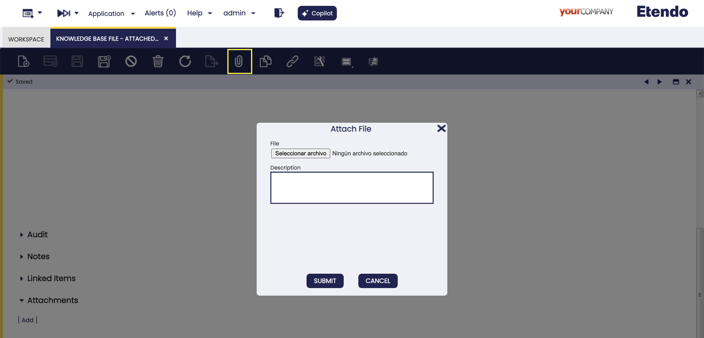

Configuración y uso de Copilot
Configuración inicial
Aplicación > Configuración General > Entidad > Entidad
Para poder utilizar Copilot, el usuario debe acceder a Etendo con el rol System Administrator y generar un token en Entidad>Secure Web Service Configuration, haciendo clic en Generar Clave.

Cómo configurar agentes
Con Etendo Copilot, es posible:
- Crear su propio agente: Utilice la ventana Agente para configurar un nuevo agente con todas las características específicas necesarias.
- Instalar un módulo con un agente preconfigurado: Algunos módulos incluyen agentes preconfigurados, que pueden utilizarse tal cual o modificarse para adaptarse a sus necesidades. Para más información, visite el bundle Extensiones de Copilot.
Ventana Agente
Aplicación > Servicios > Copilot > Agente
La ventana Agente le permite definir y configurar agentes. Las capacidades de un agente son:
- Generación de texto: el agente puede responder preguntas o recuperar resultados de su base de conocimiento desde el modelo LLM (conocimiento general). Estos modelos pueden generar texto en función del prompt de entrada.
- Recuperación: el agente puede configurarse con una base de conocimiento personalizada, que puede utilizarse para recuperar información. Es útil cuando existe documentación o información que el agente puede usar para responder preguntas.
- Herramientas: el agente puede usar herramientas para realizar tareas específicas. Las herramientas se definen en la ventana Habilidad/Herramienta.
- Recibir adjuntos: tanto los agentes como las herramientas pueden utilizar archivos en múltiples formatos.
- Leer imágenes: existen modelos que pueden recibir imágenes como entrada y trabajar directamente con ellas. Esta funcionalidad solo está disponible para el tipo de Agente multimodelo.
Tip
Se recomienda leer esta página completa para comprender las posibles configuraciones, pero después puede continuar a la página Cómo crear un agente.
Cabecera
{kind=link}
Campos a tener en cuenta:
- Nombre: nombre del agente
- Descripción: descripción del agente
- Descripción: la descripción del agente para que el gestor pueda elegir el agente adecuado para cada caso.
-
Tipo de aplicación:
-
Agente multimodelo Este tipo de agentes puede usar múltiples modelos de distintos proveedores, como OpenAI, Anthropic, etc.
Esta es la opción más recomendada para definir un agente simple. Los agentes pueden tener una base de conocimiento rellenada con archivos y pueden usar herramientas para realizar tareas específicas. El agente utilizará estratégicamente las herramientas y la base de conocimiento para proporcionar la mejor respuesta posible. -
LangGraph
Esta opción funciona como un gestor de otros agentes y permite seleccionar miembros del equipo. Como librería, LangGraph suele funcionar como una herramienta de software diseñada para ayudar a desarrolladores e investigadores a trabajar con datos lingüísticos en un formato estructurado basado en grafos. La cantidad máxima por defecto de interacciones entre el gestor y los agentes es 50, aunque se puede configurar una cantidad diferente.
-
-
Estado de sincronización: este campo de solo lectura indica el estado actual del agente.
Pending synchronizationel agente cambiará a este estado ante cualquier cambio, ya sea en la cabecera o en las solapas.Synchronized, es necesario sincronizar el agente usando el botón “Sincronizar agente”.
-
Módulo: módulo en el que se exportarán el agente y todas sus configuraciones. Este campo solo está disponible con el rol
System Administrator. - Activo: casilla para activar o no el agente.
- SystemApp: casilla para limitar el uso de determinados agentes únicamente bajo el rol
system administratory no disponible para usuarios finales. -
Prompt: instrucciones específicas de los agentes. Estas instrucciones pueden escribirse en inglés o en español.
Info
El campo Prompt puede tener las siguientes variables dinámicas:
@context.url@,@ETENDO_HOST@,@ETENDO_HOST_DOCKER@y@source.path@. Estas variables se sustituirán por los valores definidos en el archivogradle.properties. -
Vista previa del grafo: en caso de definir una aplicación de tipo LangGraph, muestra el árbol de agentes bajo un determinado gestor.
Configuración avanzada
- Modelo: lista desplegable de modelos disponibles, desde la ventana Modelos de IA. Si se deja vacío al ejecutar el botón
Sync Agent, se utiliza el modelo por defecto. - Ejecución de código: esta casilla habilita la funcionalidad experimental de ejecución de código en agentes de tipo multimodelo.
- Cant. resultados de búsqueda: esta opción le permite establecer el número de resultados de búsqueda en la base de conocimiento en los que el agente basará su respuesta. El valor por defecto es 4, pero puede cambiarse a cualquier valor. Este valor es útil cuando el agente tiene una base de conocimiento grande y desea aumentar/disminuir el número de resultados devueltos por el agente.
- Temperatura: controla la aleatoriedad; valores más bajos dan como resultado completados menos aleatorios. A medida que la temperatura se aproxima a cero, el modelo se vuelve determinista y repetitivo.
- Esquema JSON para salidas estructuradas: cuando se configura, el agente intentará devolver respuestas que se ajusten al esquema proporcionado descrito en formato JSON Schema. Esto es útil para garantizar que las salidas del agente estén estructuradas y puedan analizarse o procesarse fácilmente por otros sistemas.
Botones
{kind=link}
-
Sincronizar agente: este proceso se encarga de actualizar o crear un nuevo agente, en caso de que no exista. Además de crear el agente en base a las configuraciones, inicialmente obtiene o actualiza la lista de modelos y, finalmente, obtiene y/o sube los archivos usados como base de conocimiento.
-
Actualizar vista previa: se muestra solo cuando el tipo de agente es Langraph, permitiendo al usuario actualizar la Vista previa del grafo cuando se introducen cambios en los miembros del equipo.
-
Comprobar hosts: este botón comprueba la configuración de Etendo y Copilot, para asegurar que la comunicación entre ambos es correcta. En caso de error, se mostrará un mensaje.
-
Clonar: el botón de clonado de la barra de navegación permite clonar agentes, creando una copia tanto de todos los campos de cabecera como de los registros relacionados en las solapas. Cuando se clona un agente, se añade el nombre
Copy of.
Solapa Conocimiento
En esta solapa, puede configurar los archivos que se utilizarán por el agente como base de conocimiento, en prompts o preguntas.
Info
Para cargar nuevos archivos, debe hacerlo desde la ventana archivo de base de conocimiento; primero define los archivos y luego, desde esta solapa, configura cómo se utilizará el archivo.
Info
Al configurar archivos para Agente Langchain o Agente multimodelo, recuerde que los formatos soportados son .zip, .txt, .pdf y .md. Para archivos .zip, tenga en cuenta que estos son los únicos formatos que los agentes leerán: .txt, .pdf, .md, .py, .java y .js.
{kind=link}
Campos a tener en cuenta:
- Archivo: el archivo seleccionado como base de conocimiento.
-
Comportamiento: la forma en que el agente utilizará el archivo. Tiene múltiples opciones disponibles:
- [Agente] Añadir al agente como base de conocimiento: adecuado para archivos grandes. El agente utiliza una
Knowledge Base Search toolpor defecto para recuperar información durante la ejecución. Requiere sincronización usando el botón Sincronizar agente. - [Agente] Añadir el contenido del archivo al prompt: recomendado para archivos pequeños con datos esenciales. El contenido del archivo se inserta en el prompt en cada @alias@ o se añade al final si no se define ningún alias.
- [Agente] SPEC: Añadir como especificación del agente: usado para archivos de tipo
OpenAPI Specification. Genera automáticamente herramientas para cada método y endpoint, permitiendo que el agente interactúe con APIs. - [Pregunta del usuario] Añadir contenido a cada pregunta: lo mejor cuando el contenido del archivo cambia con frecuencia. El archivo se añade a cada mensaje del usuario, asegurando que el agente siempre reciba datos actualizados.
- [Agente] Añadir al agente como base de conocimiento: adecuado para archivos grandes. El agente utiliza una
-
Activo: casilla para activar el archivo de base de conocimiento.
- Tipo: campo de solo lectura que muestra el tipo de archivo seleccionado en la ventana Archivo de base de conocimiento.
- Módulo: módulo en el que se exportará esta configuración del archivo de base de conocimiento. Este campo solo está disponible con el rol
System Administrator. - Alias: en caso de que seleccione el comportamiento
[Agente] Añadir el contenido del archivo al prompt, por defecto añade el contenido del archivo dinámicamente al final del prompt; el alias puede usarse para reemplazar el contenido del archivo dentro del prompt, usando el comodín @@, con el alias que defina en este campo.
Solapa Habilidades y herramientas
En esta solapa, puede definir las herramientas que utilizará el agente.

Campos a tener en cuenta:
- Habilidad/Herramienta: el usuario puede seleccionar cualquiera de las opciones disponibles en este campo, tantas como sea necesario, pero de una en una.
- Descripción: campo de solo lectura. Muestra la descripción de la herramienta, usada por el agente para elegir la herramienta adecuada para cada caso.
- Modelo: este campo aparece solo cuando la herramienta seleccionada tiene habilitada la casilla Use Model en la ventana Habilidad/Herramienta. Le permite configurar un modelo LLM específico para esta herramienta en este agente. El modelo debe especificarse usando el formato
provider/modelname(p. ej.,openai/gpt-4,anthropic/claude-3-5-sonnet). Si se deja vacío, se seleccionará un modelo por defecto dependiendo de la implementación de la herramienta. - Módulo: módulo en el que se exportará esta configuración de herramienta. Este campo solo está disponible con el rol
System Administrator. - Activo: casilla para activar la herramienta.
Info
Para introducir nuevas herramientas, debe hacerlo desde la ventana Habilidad/Herramienta.
Solapa Miembros del equipo
En esta solapa define los miembros del equipo de los agentes; solo está presente si selecciona el tipo de aplicación LangGraph. Recuerde que LangGraph funciona como un gestor de otros agentes, capaz de delegar tareas específicas.
{kind=link}
Campos a tener en cuenta:
-
Miembro: el usuario puede seleccionar uno o más agentes para el gestor.
Warning
Recuerde que solo puede seleccionar agentes a los que haya definido acceso en la ventana Acceso de agente.
-
Descripción: campo de solo lectura. Muestra la descripción del agente, usada por el gestor para elegir el agente adecuado para cada caso.
Warning
Recuerde que no es posible seleccionar un agente sin una descripción.
-
Activo: casilla para activar el miembro del equipo.
Solapa Servidores MCP
Esta solapa permite la configuración de servidores Model Context Protocol (MCP), que amplían las capacidades del agente integrando herramientas y recursos externos. Los servidores MCP operan como procesos externos con los que los agentes establecen comunicación para acceder a funcionalidades especializadas.
{kind=link}
Campos a tener en cuenta:
- Servidor MCP: el usuario puede seleccionar entre los servidores MCP disponibles configurados en el sistema. Se pueden añadir múltiples servidores MCP para ampliar las capacidades del agente.
- Descripción: campo de solo lectura que muestra la descripción del servidor MCP seleccionado, ayudando a los usuarios a entender qué funcionalidad proporciona.
- Activo: casilla para activar o desactivar el servidor MCP para este agente.
Tip
Para instrucciones detalladas sobre cómo crear y configurar servidores MCP, consulte Cómo configurar servidores MCP en agentes de Etendo.
Ventana de Archivo de base de conocimiento
Aplicación>Servicios>Copilot>Archivo de base de conocimiento
En la ventana Archivo de base de conocimiento, puede definir los archivos con los que los agentes pueden interactuar.
Indexación de imágenes
Cuando los archivos se indexan en la base de conocimiento de un agente, los archivos de imagen se gestionan de forma diferente a los documentos de texto:
- Documentos de texto (PDF, TXT, MD, etc.) se indexan en la base de datos vectorial principal para la búsqueda semántica usando la herramienta de búsqueda de la base de conocimiento
- Archivos de imagen (PNG, JPG, JPEG, etc.) se indexan en una base de datos de imágenes independiente diseñada específicamente para la búsqueda por similitud visual
- Esta base de datos de imágenes se utiliza actualmente por la Herramienta OCR para encontrar plantillas de referencia con marcadores visuales que guían la extracción de datos
- Cada agente mantiene su propia base de datos de imágenes, separada de su base de conocimiento de texto
Cabecera
{kind=link}
Campos a tener en cuenta:
- Nombre: Nombre archivo.
- Descripción: Descripción del archivo.
- Última sincronización: Campo de solo lectura que muestra la fecha de la última actualización con OpenAI.
- Omitir división: Al marcar esta casilla, puede indicar a Copilot que no divida el archivo en partes al indexarlo. Esto es necesario cuando se necesita el contenido completo del archivo al leerlo, manteniendo el contexto del archivo completo.
-
Nombre archivo: Nombre del archivo guardado; siempre debe incluir el formato del archivo. Por ejemplo,
example.pdf. -
Campos opcionales por Tipo de archivo:
Este tipo permite subir archivos directamente a Copilot para su uso posterior durante las interacciones con los agentes. 
Este tipo permite a los agentes acceder, consultar y generar un
ZIPcon archivos de código que se indexarán en la base de conocimiento. Permite la configuración de rutas y expresiones regulares para filtrar archivos, que se definen en la solapa Ruta de archivo.Warning
Este tipo solo está disponible con el rol
System Administrator, ya que se requiere acceso al código fuente.Solapa Ruta de archivo
Campos a tener en cuenta:
- Archivo de ruta: Especifique la ruta donde se encuentran los archivos de código que necesita que el agente lea.
Info
También es posible usar otras variables como
@source.path@:para que el sistema la sustituya automáticamente por la ruta donde está instalado EtendoERP. Además, se pueden usar comodines como*para acceder a todos los archivos del mismo tipo en un directorio (p. ej.,test/*.javaaccederá a todos los archivos Java en la carpetatest), y este**, para incluir subdirectorios (p. ej.,test/**/*.javaaccederá a todos los archivos Java dentro detesty sus subdirectorios).Warning
Como se requiere acceso al código fuente, tanto los módulos como Etendo deben estar instalados en formato fuente.
Warning
Es obligatorio definir en el campo Nombre archivo un archivo con extensión
.zip, porque al sincronizar el agente usando este archivo se generará unZIPcon los archivos filtrados.Puede proporcionar archivos de código desde un repositorio de GitHub público, desde el cual Copilot recuperará los archivos cuando sea necesario. Esto facilita que Copilot acceda al código necesario.
Warning
Este tipo solo está disponible con el rol
System Administrator.Solapa Ruta de archivo
Campos a tener en cuenta:
-
Archivo de ruta: Ubicación de los archivos de código. Debe cumplir con el formato:
Info
/: Siempre comienza con una barra.{owner}: El usuario u organización de GitHub (sin dominio). P. ej.:etendosoftware/{repo}: El nombre del repositorio de GitHub. P. ej.:etendo_core{branch}: El nombre de la rama o etiqueta que desea descargar. P. ej.:mainorelease/24.4-
/{subpath}La ruta interna dentro del repositorio que desea filtrar. Puede apuntar a un directorio o incluir un patrón de nombre de archivo con*.Ejemplos:
-
.extension(Opcional): Si termina su subruta con una extensión (p. ej.,.javao.xml), el hook solo filtra los archivos de esas extensiones. Si omite la extensión o usa*como extensión, incluirá todos los tipos de archivo bajo esa subruta.
Warning
Es obligatorio definir en el campo Nombre archivo un archivo con extensión
.zip, porque al sincronizar el agente usando este archivo se generará unZIPcon los archivos filtrados.Este tipo permite usar el resultado de una consulta HQL como archivo para el archivo de base de conocimiento.
Campos a tener en cuenta:
- HQL: Solo se muestra si se elige la opción Consulta HQL en el campo Tipo.
Este tipo de archivos permite obtener el JSON de la especificación de un OpenAPI REST generado desde Flows y Request de Etendo; para más información técnica puede consultar Cómo documentar un endpoint con OpenAPI.
Campos a tener en cuenta:
- Flujo OpenAPI Solo se muestra si se elige Especificación de flujo OpenAPI en el campo Tipo. Selector de flujo OpenAPI, que agrupa endpoints comunes a una funcionalidad específica.
Puede proporcionar una URL pública desde la cual Copilot recuperará el archivo cuando sea necesario. Esto facilita el acceso a documentos de texto y recursos de texto externos.
Campos a tener en cuenta:
- URL: URL del archivo de origen.
- Nombre archivo: Nombre obligatorio del archivo guardado; siempre debe incluir el formato del archivo.
Esto permite escribir el contenido del archivo directamente en el área de texto. Esta opción es útil para textos pequeños que deben versionarse en el sistema.
Campos a tener en cuenta:
- Texto: Contenido de texto del archivo.
{kind=link}
{kind=link}
{kind=link}
{kind=link}
{kind=link}
{kind=link}
{kind=link}
Ajustes avanzados
Campos a tener en cuenta:
- Omitir división: Recupera el documento completo como un único fragmento, lo cual es útil para archivos pequeños.
- Tamaño máx. de fragmento: Establece el tamaño máximo (en tokens) de cada fragmento al dividir el contenido. Esto evita fragmentos excesivamente grandes que podrían afectar al rendimiento o superar el límite de tokens del modelo. El algoritmo de división utiliza separadores según el tipo de archivo. Por ejemplo, encabezados en markdown o clases en Java, de modo que cada fragmento agrupa contenido relacionado. Cuando se alcanza el límite, el contenido se divide en el siguiente separador.
- Solapamiento de fragmentos: Establece el número de tokens repetidos entre fragmentos para evitar pérdida de información al dividir el contenido. Por ejemplo, con un tamaño de fragmento de 100 y un solapamiento de 10, cada fragmento tendrá 90 tokens nuevos y 10 tokens del fragmento anterior. Establézcalo en 0 para desactivar el solapamiento.
Botones
-
Clonar
El botón de clonado de la barra de navegación permite clonar archivos, creando una copia tanto de todos los campos de cabecera como de los registros relacionados en las solapas. Cuando se clona un archivo, se añade el nombre
Copy of.Ventana de Habilidad/Herramienta
{kind=link}
Aplicación>Servicios>Copilot>Habilidad/Herramienta
En esta ventana, el usuario puede encontrar las herramientas disponibles, distribuidas en el bundle Copilot, para ser utilizadas en agentes de Copilot.
{kind=link}
Campos a tener en cuenta:
- Usar modelo: Casilla de verificación que indica si esta herramienta requiere un modelo LLM para funcionar. Cuando está marcada, aparecerá un campo Modelo en la solapa Habilidades y herramientas de la ventana Agente, permitiendo configurar un modelo específico para esta herramienta en ese agente.
Algunas herramientas requieren comunicarse con Etendo a través de WebHooks. Su configuración se puede encontrar en la solapa Webhooks.
Info
En caso de que quiera definir nuevas herramientas, visite Cómo crear herramientas de Copilot.
Ventana de Acceso del Agente
Aplicación>Servicios>Copilot>Acceso del Agente
En esta ventana, es posible configurar los roles de acceso para cada Agente. Esto significa que puede controlar quién tiene permiso para interactuar con cada agente. Esta funcionalidad es útil para garantizar que los usuarios solo tengan acceso a funciones relevantes para sus responsabilidades. Esta posibilidad depende del nivel de rol que tenga.
{kind=link}
Info
Esta configuración también es posible desde la ventana de Rol.
Note
En caso de eliminar un agente, los registros de acceso del agente relacionados también se eliminan.
Ventana Memoria del Agente
Aplicación > Servicios > Copilot > Memoria del Agente
La ventana Memoria del Agente le permite capturar y reutilizar reglas y conocimiento adquiridos en cualquier agente de Copilot. Cada memoria que registre está vinculada a un agente específico y se inyecta automáticamente en sus respuestas según el contexto de su organización, rol y usuario.

Campos a tener en cuenta:
- Organización: Por defecto, la organización del agente; puede dejarse en blanco para una memoria global. Copilot solo inyecta entradas que pertenezcan al árbol de la organización actual, salvo que el valor esté vacío.
- Activo: Activa o desactiva la memoria sin eliminarla. Las filas inactivas nunca llegan a la conversación.
- Usuario/Contacto: Propietario de usuario opcional. Déjelo vacío para exponerlo a todos. Solo el usuario seleccionado ve la memoria.
- Rol: Filtro de rol opcional. Cualquier usuario que trabaje bajo el rol elegido recibirá la indicación.
- Campo de texto: El contenido real que Copilot añadirá. Se recomienda usar afirmaciones cortas y orientadas a la acción.
Info
Cuando varias memorias coinciden, Copilot las lista como viñetas bajo “Utilice la siguiente información previa relevante”.
Ventana Procesamiento de Peticiones
Aplicación>Configuración General>Planificador de procesos>Procesamiento de Peticiones
En esta ventana, el usuario puede planificar procesos en segundo plano de Etendo Copilot seleccionando la opción Agents Schedule en el campo Proceso y utilizando todas las opciones proporcionadas como hora, fecha de inicio, frecuencia, etc.
Info
Para más información, visite Procesamiento de Peticiones.
Solapa Agente
Info
Esta solapa solo es visible cuando se selecciona un proceso Agents Schedule.
En esta solapa, se puede configurar el proceso que se va a planificar.
{kind=link}
Campos a tener en cuenta:
- Nombre: Descripción del nombre.
- Agente: Agente correspondiente para el proceso.
- Prompt: Instrucción para el proceso.
- Activo: Casilla de verificación para seleccionar si esta herramienta está activa o no.
Ventana Conversaciones
Aplicación>Servicios>Copilot>Conversaciones
En esta ventana, el usuario puede encontrar y acceder a todas las interacciones realizadas con Copilot. Estos registros muestran información específica sobre estas conversaciones, como el usuario, la fecha de creación y el agente.
{kind=link}
Campos a tener en cuenta:
- Usuario/Contacto: El usuario que interactuó con Copilot
- ExternalID: ID de conversación del proveedor externo
- Fecha Creación: La fecha de la conversación
- Visible: Casilla de verificación para marcar y hacer visible el registro
- Último mensaje: Fecha del último mensaje de la conversación
- Agente: Agente seleccionado para interactuar
Solapa Mensajes
En esta solapa se muestran los diferentes mensajes incluidos en cada conversación específica.
Campos a tener en cuenta:
- Mensaje: Mensaje exacto utilizado en la conversación
- Hora: Hora del mensaje
- Fecha Creación: Fecha del mensaje
Ventana AI Models
Aplicación>Servicios>Copilot>AI Models
En esta ventana, el usuario puede encontrar y añadir modelos de IA para que sean utilizados por los agentes, disponibles en la lista desplegable de modelos.
Info
- Automáticamente, la ventana se rellenará con los modelos distribuidos por defecto de Etendo, tras la primera sincronización del agente.
- Además, los diferentes modelos y proveedores deben introducirse manualmente.
{kind=link}
Campos a tener en cuenta:
- Código: El nombre de código del modelo. Debe estar en minúsculas.
- Nombre: El nombre legible del modelo.
- Proveedor: El proveedor del modelo. Debe estar en minúsculas.
- Max Tokens: El número máximo de tokens que puede generar el modelo. Este es un campo obligatorio en algunos modelos, que puede utilizarse para limitar o ampliar las capacidades del modelo, dependiendo de la naturaleza del modelo.
- Valor por defecto: Campo de solo lectura, para identificar el modelo por defecto a utilizar; esta configuración es distribuida y actualizada por Etendo.
- Default Override: Si este campo está marcado, el modelo seleccionado tendrá prioridad sobre los demás. Solo un registro puede tener esta marca seleccionada.
- Etendo Maintenance: Campo de solo lectura, para identificar los modelos que son distribuidos por Etendo.
Botones
- Sync Models
Este proceso permite sincronizar bajo demanda los modelos distribuidos por Etendo.
Este trabajo está licenciado bajo CC BY-SA 2.5 ES por Futit Services S.L.